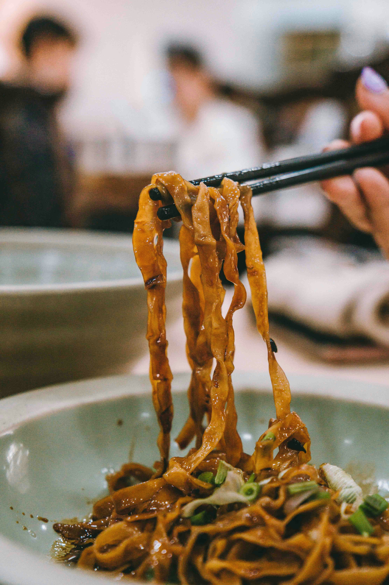

Nées dans les ruelles d’Asie, façonnées à la main,
les nouilles chinoises ont voyagé à travers le temps, les peuples et les bols.
De la farine et de l’eau, simples mais puissantes, elles sont devenues le cœur d’une cuisine vivante.
Chaque bouillon porte un souvenir, chaque nouille une histoire.
Derrière leur simplicité se cache un monde de gestes, de sons et d’odeurs.
Goûter une nouille, c’est remonter le fil du temps —
jusqu’à la première main qui l’a façonnée.
